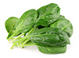

Roasted Peppers, Spinach & Feta Pizza

45 minutes
86
Mediterranean, Italian, European
Lunch, Main Course, Main Dish, Dinner
Lacto, Ovo, Vegetarian
-
75.0
g
feta cheese

-
1.0
flatout flatbread

-
2.0
cloves
garlic

-
74.5
g
orange pepper

-
40.0
g
onion

- 30.0 g spinach 
-
0.5
tomato

- Toss peppers, tomatoes, onions and garlic with olive oil and spread on a baking sheet. Roast at 400 degrees for 20 minutes.
- Place flatbread on baking sheet.
- Layer peppers, tomatoes, onions and spinach on flatbread.
- Sprinkle with feta.
- Bake for 10 minutes at 400 degrees.Turn oven to broil and cook on low for 2-3 minutes or until flatbread edges begin to brown.